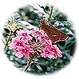
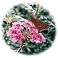
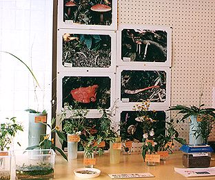

展示の紹介(てんじのしょうかい)


特にこれまでから継続(けいぞく)して展示しているのが、「池田の蝶」…もちろんクワガタムシやカブトムシ、セミのなかま、コオロギ・キリギリスのなかまもありました。
 

今年は、猪名川の魚や水生昆虫などが増えました。
猪名川・箕面川の魚…オイカワ・カワムツ・ニゴイの未成魚・カワヒガイ・ギギ・コウライモロコ・カワヨシノボリ・スジシマドジョウ・カマツカ・メダカ・スジエビ・タモロコ・モツゴ
ため池の魚…ギンブナ・メダカ・ドジョウ
水生昆虫など…マツモムシ・ミズカマキリ・コオイムシ・ギンヤンマのやご・ヘイケボタルの幼虫と蛹・モリアオガエルのおたまじゃましと成体・イモリ・オオタニシ・サワガニ
水生植物…ヒメガマ・ミクリ・イチョウウキゴケ・クロモ・フサモ・オオカナダモ・マツモ・ヒシ・ノタヌキモ・エビモ

季節の植物がいろどりをそえてくれました。きのこの写真も展示されました。
陸上植物…オグルマギク・キクイモ・ハキダメギク・ハルノノゲシ・セイヨウタンポポ・ヨメナ・ベニバナボロギク・ブタナ・ガンクビソウ・シンミズヒキ・ママコノシリヌケイ・ヒナタイノコズチ・ホソアオゲイソウ・ダイコンソウ・ヤブミョウガ・ヤブラン・メハジキ・ミヤコグサ・ネムノキ・ヌスビトハギ・リョウブ・クサギ・ドウカンソウ・ヨウシュヤマゴボウ

「お持ち帰り」のコーナーでは、カブトムシやスズムシをさしあげていました。
来年度は、より豊かな内容になりそうです。日程(にってい)が決まりましたら、「五月山の自然展」のページでお知らせします。ぜひ、お来しください。